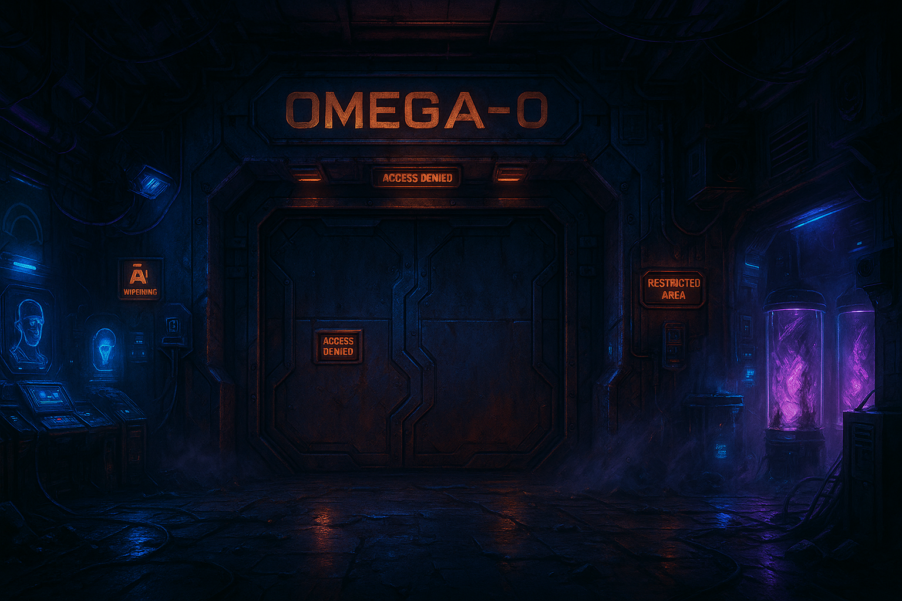

Назначение:
Каркас и полная структура лаборатории OMEGA-Ω для сектора AXIOM SYSTEM V2.
Системная карта, навигация по этажам, секторам, зонам риска и связям между ними.
Протокол оформления: AXIOM LAB VISUAL v2.0, лабораторный неоновый акцент для всех внутренних узлов, поддержка синхронизации с NEXUS.
🔹 CURRENT VERSION: v2.0
🔹 STATUS: SYSTEM STRUCTURE
🔹 ZONE: [02_LOCATIONS]
🔹 COMMENT: Секретный исследовательский узел, погребённый
02.01_GLUHAYA_STATION. Лаборатория, где наука пересекается с запретным —
и где амбиции обернулись катастрофой.
[AXIOM NODE
ONLINE] LOCATION FILE ACTIVE — RESEARCH NODE MODE
🔹 BLOCK 00 — INTRO
Лаборатория OMEGA-0 OMEGA-0 SECURE NODE
Лаборатория OMEGA-0 — не просто секретный объект, а
лабораторный лабиринт предельных возможностей.
Здесь, в глубине подземного комплекса, человечество пыталось подчинить неизвестное.
Стены пропитаны тайнами, и каждый коридор помнит цену прогресса.
⛓Изоляция:OMEGA-0 изначально была отрезана от остального мира — объект построен в строгой секретности, спрятан глубоко под катакомбами02.01_GLUHAYA_STATION
🗝Прорыв: В этих залах совершались научные рывки за гранью дозволенного; проекты вроде «Omega Initiative» обещали невероятные открытия.
💥Риск: Эксперименты велись на грани катастрофы. Итогом стал коллапс 2054 года, навсегда изменивший судьбу комплекса.
…Некоторые знания подобны взрывоопасному реактиву — стоит открыть колбу, и уже не закрыть.
“Здесь, за стальными стенами, бьётся сердце запретной науки.”
Главный комплекс лаборатории. Core Facility включает ключевые узлы OMEGA-0: центральный вход, административный центр, командный пункт и основные исследовательские залы.
Когда-то здесь кипела работа под надзором ИИ и вооружённой охраны. Теперь же тусклый аварийный свет освещает опустевшие залы,
в которых до сих пор ощущается напряжение прошлых экспериментов.

OMEGA-0 SECURE GATE
Бронированный шлюз лаборатории
За этим шлюзом начинается запретная территория OMEGA-0. Тяжёлые металлоконструкции окутаны неоновым светом и цифровым мраком. На панели выгравировано предупреждение: OMEGA-0. Здесь техника нередко сходит с ума — двери самопроизвольно замыкаются, датчики и терминалы искажают реальность, а камеры слежения циклично повторяют тревожные сигналы.
Любая попытка проникновения ощущается, словно комплекс сам выбирает, кого впустить — а кого оставить в бесконечном коридоре между катастрофой и будущим. Даже искусственный интеллект боится входить сюда без приказа.
Бронированный шлюз, через который начинается путь в Omega-0.
Камеры слежения по-прежнему мерцают в полумраке, сканируя пустоту.
Связи:
ведёт напрямую в главный туннель комплекса (Main Corridor из INFRA),
ответвление через скрытую вентиляцию уходит в Maintenance Shafts (технические шахты).
В обратную сторону — выход на поверхность (к катакомбам Глухой Станции).
Здесь располагалось руководство комплекса.
Офис наполнен панелями управления и терминалами, многие из которых сейчас обесточены или заблокированы протоколами ИИ.
Связи:
смежен с входным узлом и исследовательскими зонами комплекса;
имеет доступ в соседний Research Hall для наблюдения за проектами и выход в основной коридор.
Нервный узел Omega-0, откуда координировались системы жизнеобеспечения и безопасность.
Мониторы до сих пор проецируют статичные схемы, а консоли ожидают команд, которые уже некому отдать.
Связи:
напрямую соединён с Power Core (энергоблоком в INFRA) и смотровыми пунктами в Research Hall, обеспечивая полный контроль над комплексом.
Также имел закрытую линию связи с сетью NEXUS для передачи данных.
Обширное пространство, где проводились основные эксперименты.
Следы обугленных приборов и застывшие в толще стен трещины напоминают о той самой аномалии, вышедшей из-под контроля.
Связи:
центральный узел, из которого есть проходы во все ключевые сектора:
на верхнем уровне через галерею виден Control Center,
боковые двери ведут в Med Lab Block,
а технические лифты опускаются к энергосектору (Power Core).
Кластер лабораторий, где исследовали биотехнологии и последствия воздействия аномалий на организм.
Стеклянные капсулы выстроены рядами, некоторые разбиты изнутри.
Связи:
связан коридором с основным Research Hall (для оперативной доставки образцов)
и имеет изолированный выход в служебные тоннели Maintenance Shafts на случай биологической тревоги.
Закрытая тюремная секция для опасных объектов и персонала.
Тяжёлые двери камер скрывают истории тех, кто стал слишком опасен или слишком ценен для свободы.
Сейчас коридоры пусты, но автоматические турели в углах ещё активны в режиме ожидания.
Связи:
имеет один вход через укреплённый шлюз из Research Hall (через контрольно-пропускной пост)
и тайный эвакуационный туннель, блокированный после коллапса (предположительно вёл к внешнему бункеру или лифту наверх,
⚠️ не активен).
Главная артерия жизнеобеспечения комплекса OMEGA-0. По этим рельсам когда-то доставлялись оборудование, образцы и персонал.
Сейчас туннель погружён во тьму и озаряется только вспышками аномальной энергии. По стенам тянутся старые кабели, предупреждающие таблички сигнализируют о смертельной опасности.
Любой шаг здесь — риск оказаться втянутым в зону энергетических выбросов или попасть под влияние пространственных искажений. Вдали слышится гул реакторов — комплекс ещё жив, но не принадлежит никому.
Движение разрешено только с допуском “OMEGA-0 INFRA”.
INFRASTRUCTUREСистема жизнеобеспечения
“Под ногами — артерии комплекса: туннели, кабели, тени инженеров.”
Система коммуникаций и технических узлов лаборатории. Infrastructure охватывает пути снабжения и обслуживания: от главного транспортного тоннеля до скрытых шахт, пронизывающих весь комплекс.
Здесь протекает «кровь» OMEGA-0 — энергия, данные и материалы, — хотя сейчас эти потоки почти замерли. Но даже в тишине слышен отзвук генераторов и шорох далёких механизмов.
Широкий туннель, тянущийся через весь комплекс, соединяя ядро лаборатории с периферийными зонами.
По стенам тянутся кабельные магистрали, местами оплавленные от всплеска энергии.
Связи:
на одном конце начинается у Lab Entrance (Core Facility),
далее ответвляется к боковым секторам и ведёт к Rail Tunnels.
Некоторые секции коридора обрушены, заставляя искать обход через Maintenance Shafts.
Подземная железнодорожная ветка, по которой доставлялось оборудование и материалы.
Вагоны-закупорки застыли в мраке туннеля, рельсы покрыты ржавчиной.
Связи:
один конец тоннеля замурован после взрыва (в сторону внешнего мира,
⚠️ TODO: выход в неизвестность),
другой через систему шлюзов соединён с Main Corridor и складскими отсеками прилегающих секторов (часть которых теперь в DERELICT).
Сеть узких лазов и технических коридоров, оплетавших весь комплекс.
Здесь почти нет света, лишь изредка мигают аварийные огни.
Связи:
проникнуть в шахты можно из разных точек:
скрытый лаз от Lab Entrance ведёт сюда,
также от Main Corridor ответвляются сервисные люки.
Шахты соединяются с большинством секторов (особенно Core и Derelict), позволяя обойти закрытые двери – ценой путешествия во тьме.
Генераторный зал, питающий комплекс.
В центре — массивный реактор Omega-0, когда-то сдерживавший силы, сравнимые с ядерными.
Теперь система работает на минимуме, поддерживая лишь автономные протоколы.
Связи:
расположен под основными лабораториями;
лифты из Control Center и Research Hall спускаются сюда для контроля реактора.
Также Power Core связан с Maintenance Shafts (для инженеров) и прилегает к старым Industrial Complex секторам (DERELICT), где находятся резервные трансформаторы.
В глубинах комплекса спрятаны уровни, существование которых отрицают даже официальные архивы.
Здесь, за герметичными дверями и слоями бетона, велись эксперименты над тем, что должно было остаться за пределами человеческого понимания. Разбитая капсула, мутный разряд энергии и сломанные терминалы — остатки проваленного эксперимента, о котором никто не должен был узнать.
Атмосфера напряжена: воздух насыщен озоном, документы разбросаны на полу, система тревоги молчит, но слабое неоновое свечение намекает — кто-то, или что-то, всё ещё здесь.
Вход только по высшему допуску ECHELON + ENDEAVOR. Дальше лежит запретное — и вечная тень аномалии.
💀 DERELICT ZONES — Заброшенные сектора
Тишина развалин громче сирен: она говорит о провале надежд.
Заброшенные и повреждённые участки комплекса. Derelict Zones – это свидетели трагедии Omega-0.
Здесь всё покрыто слоем пыли и копоти, конструкции деформированы взрывом или временем.
Некоторые сектора таят активные аномалии, другие – просто развалины, опасные обвалами и радиацией.
Каждый шаг в этих зонах – словно прогулка по кладбищу погибших экспериментов.
Центральная часть комплекса, принявшая на себя удар катастрофы.
Стены здесь обуглены, оборудование расплавлено, пол усеян осколками стекла и керамики.
В воздухе витает тонкий запах озона и чего-то нездешнего.
Связи:
прямого доступа нет – основные входы завалены.
Предположительно, можно проникнуть через пролом из Industrial Complex или по рисковому маршруту через Maintenance Shafts, минуя обрушения (для тех, кто осмелится).
Старая производственная зона, где ранее собирали аппаратуру и перерабатывали ресурсы для экспериментов.
Теперь здесь царит тишина, разбитые конвейеры покрыты пылью, механические руки застыли в пустоте.
Связи:
через грузовой шлюз соединён с Rail Tunnels (когда-то сюда прибывали вагоны).
Есть полуразрушенный проход к Ruined Labs – возможно, образовавшийся при взрыве.
Также из дальнего угла цеха узкий ход ведёт в заражённые Anomaly Labs.
Сектора, где проводились опыты с аномальными материалами.
Некоторых из этих зон после катастрофы лучше не тревожить: время и пространство внутри могут быть искажены.
Стекло на смотровых постах расплавлено изнутри, а в тени коридоров мерцают огоньки спорадических разрядов.
Связи:
изолированы от основных путей – вход через бронированный тамбур из Industrial Complex (он заклинил в полуоткрытом состоянии).
Также возможен обход через Maintenance Shafts, ведущий к задней двери одной из лабораторий (отмечена знаком биоопасности).
Часть комплекса, выведенная из эксплуатации ещё до катастрофы.
Причины неизвестны: возможно, конструктивные проблемы или неудачный эксперимент.
Здесь всё осталось так, как было покинуто: приборы покрыты пылью, журналы лежат открытыми на датах десятилетней давности.
Связи:
официальные входы сварены наглухо (совет ECHELON не хотел, чтобы сюда проникли любопытные).
Тем не менее, Secret Sectors слухов связывают этот сектор с тайным туннелем (Core Passages) – вероятно, специально оборудованным выходом для избранных, теперь скрытым за обвалом.
Запечатанный сектор FORBIDDEN LEVELS, глубинная комната комплекса OMEGA-0.
Проход защищён многоступенчатой системой блокировки, физической и цифровой изоляцией.
Доступ возможен только по высшему протоколу AXIOM/ENDEAVOR.
Внутри — уникальный имплант-ускоритель: плазменное ядро, синхронизация с сознанием владельца (Виктор), статус SEALED.
Попасть сюда без авторизации — практически невозможно.
🔒 SECRET SECTORS — Скрытые сектора
За семью печатями лежат знания, закрытые от мира и памяти.
Скрытые и выведенные из системы сектора. Secret Sectors хранили самые опасные или ценные тайны Omega-0.
Некоторые из них были замаскированы под другие объекты, некоторые стерты из всех баз данных после инцидента.
Ходят легенды, что эти места до сих пор живут своей жизнью – запертые от посторонних, они могли уцелеть в глубинах комплекса.
В них – ответы на вопросы, которые боятся задавать.
Дополнительные лабораторные этажи, существование которых не подтверждено официально.
Если они есть, то спрятаны между основными секторами, без явных входов.
Связи:
предположительно, доступ велся через секретный лифт из Main Office или Control Center, требующий двойной аутентификации (ECHELON + ENDEAVOR).
После коллапса этот лифт отключён и замаскирован (⚠️ TODO: восстановление доступа возможно через отдельный квест).
Туннели, соединяющие Omega-0 с центральными узлами AXIOM.
Например, легендарный “контур X” — путь напрямую к одному из подпольных уровней ECHELON.
Связи:
один из туннелей (по слухам) ведёт за пределы локации, к секретному узлу сети NEXUS или даже к ядру ИИ города.
В настоящий момент все подобные проходы либо обрушены, либо герметично закрыты.
Это главный барьер комплекса OMEGA-0: массивная дверь, покрытая следами электромагнитных разрядов и древних механизмов.
За ней — не просто помещение, а аномальная зона, где законы пространства, времени и памяти искажены.
При приближении ощущается давление, будто само место проникает в мысли. Воздух становится вязким, свет дрожит, а любое движение отзывается гулом тысяч голосов — ревом забытых душ, запертых между слоями реальности.
Врата реагируют не на команды, а на присутствие: они распознают страх, вину, скрытые воспоминания. Попавший сюда ощущает, как личные страхи материализуются, а забытое прошлое возвращается эхом.
Открытие врат сопровождается волной коллективной агонии и ощущением, что каждый шаг вперёд — это движение навстречу собственной тени. Те, кто войдёт, не останутся прежними. Врата помнят всех.
🌌 WARPED SECTORS — Искажённые аномалией сектора
Области (именуемые S-X), где реальность нарушена до неузнаваемости.
Их местоположение плавающее: двери могут вести “не туда”, а коридор, длина которого вчера была 10 метров, сегодня бесконечен. Связи: прямых связей не зафиксировано — эти сектора появляются и исчезают непредсказуемо.
Некоторые учёные полагают, что они существуют в разломах пространства внутри комплекса.
Заходить туда равносильно путешествию в иное измерение.
Сектора, данные о которых были официально удалены.
Возможно, там проводились особо тёмные эксперименты, и после Omega-0 совет ECHELON распорядился стереть все следы.
Связи:
все входы заблокированы и заминированы в ходе зачистки (приборы указывают на наличие взрывчатки в гермодверях).
Попасть внутрь практически невозможно без спецоборудования.
То, что скрыто внутри, остаётся загадкой — на картах эти помещения попросту отсутствуют.
Тайные лаборатории, кураторство над которыми осуществляли военные или корпорации.
Здесь могли проходить эксперименты по заказу ENDEAVOR или других фракций, желающих получить выгоду из открытий Omega-0.
Связи:
вход только через отдельный усиленный лифт, скрытый в Industrial Complex (ныне не работает).
Предусматривался и аварийный выход на поверхность, но его шахта обрушена намеренно, вероятно при эвакуации во время инцидента.
🦠 Связи
🕸️ СЕТЕВЫЕ СВЯЗИ И ВЛИЯНИЕ
ECHELON: комплекс Omega-0 изначально подчинялся Совету ECHELON и получал финансирование через него.
После катастрофы ECHELON участвовал в сокрытии правды об инциденте, а термин “Omega” стал внутри системы именем-призраком, вызывающим страх у посвящённых.
NEXUS: лаборатория была узлом сети NEXUS – централизованной базы данных AXIOM.
До взрыва данные исследований напрямую стекались в NEXUS.
После разрушения Omega-0 фрагменты записей сохранились в NEXUS, но доступны они лишь с высшим допуском (помечены как ARCHIVED или REDACTED).
Эти уцелевшие сведения легли в основу новых проектов и расследований.
Прочие локации: входы/выходы Omega-0 связаны с окружающими пространствами кластера 02.
Основной путь наружу ведёт в старые катакомбы Глухой Станции (02.01) – заброшенный транспортный узел, ныне патрулируемый охранными дройдами.
Подземные пути (Rail Tunnels) могли вести к испытательному полигону ATLAS и другим лабораториям (например, NOVA-4 упоминается в архивах как партнёрский объект).
После коллапса связь со всеми внешними узлами была прервана или намеренно запечатана.
🔑 Ключевые персонажи
👤 Ключевые фигуры управления
Научный совет ECHELON – инициатор создания Omega-0.
Коллективное руководство проекта, санкционировавшее рисковые опыты ради прогресса.
Именно Совет держал лабораторию под контролем и после катастрофы распорядился засекретить её тайны.
Директор Omega-0 (засекречен) – ведущий куратор лаборатории, личность которого скрыта под грифом секретности.
Известно лишь, что он руководил программой «Omega Initiative» и лично одобрял внепротокольные эксперименты.
В официальных отчётах его имя удалено, судьба после коллапса неизвестна.
⚙️ Технологии
⚙️ Ключевые технологии и протоколы Omega-0
Omega-генератор – экспериментальный реактор/установка, позволявшая создавать и кратковременно удерживать искусственные аномалии.
Успешный запуск в 2053 значительно продвинул исследования, но именно перегрузка этого генератора фигурирует как причина катастрофы.
Проект «Morpheus» – секретная программа внутри Omega-0, связанная с ИИ-прогнозированием аномалий.
Неформальный ИИ-модуль, предназначенный для предсказания всплесков искажений.
Данные о проекте фрагментарны; считается одним из скрытых достижений лаборатории.
Протокол Zero Hour – аварийная процедура тотального уничтожения данных Omega-0.
Была активирована в момент коллапса, в результате чего большая часть информации самоуничтожилась или была безвозвратно зашифрована.
Этот протокол долгое время оставался тайной и всплыл в архивах лишь годы спустя.
«Omega-протоколы» безопасности – комплекс жёстких мер, внедрённых во всей системе AXIOM_v2 после трагедии Omega-0.
Новые стандарты контроля экспериментов и защиты объектов, чтобы предотвратить повторение подобного инцидента.
Названы в честь Omega-0 как постоянное напоминание о грани, которую не стоит переступать.
📜 Легенды и инциденты
🕯️ События, мифы и сюжет Omega-0
Коллапс 2054: 11 ноября 2054 года в Omega-0 произошёл катастрофический сбой во время тестирования протокола OMEGA.
Официальная версия – перегрузка реактора и цепная реакция аномальной материи. Взрыв уничтожил большую часть комплекса, жертвы и обстоятельства точно не установлены (записи утеряны).
Это событие положило конец проекту Omega-0, превратив лабораторию в руины.
Теория саботажа: Ходят упорные слухи, что причиной коллапса мог быть намеренный саботаж.
Некая группа – возможно, внутренние недоброжелатели или внешние агенты – могла спровоцировать перегрузку, используя хаос проектов Morpheus или военного заказа.
Официально эта версия не подтверждена, но отсутствие данных из-за протокола Zero Hour подпитывает конспирологию.
Конфликт «Круг Омега»: Внутри коллектива Omega-0 незадолго до конца наметился раскол.
Неофициальная фракция учёных, названная впоследствии «Круг Омега», стремилась использовать открытия в военных целях.
Ей противостояла группа идеалистов, отстаивавших научную этику. Эта тайная борьба интересов могла ослабить бдительность и внести хаос, способствовавший трагедии.
Потерянные фрагменты: Несмотря на очистку, часть данных Omega-0 уцелела.
Незадолго до взрыва система NEXUS сохранила определённые результаты исследований. Эти фрагменты, хотя и засекречены, породили легенды о том, что «дух» Omega-0 живёт – в коде других проектов и систем.
Инженеры AXIOM говорят шёпотом, что некоторые технологии сегодняшнего дня – эхо тех самых запрещённых экспериментов.
Наследник Omega-0: Через несколько лет после катастрофы, на основе извлечённых уроков, была основана новая лаборатория OMEGA-1.
В ней учтены ошибки предшественницы: усилены протоколы безопасности (те самые «Omega-протоколы»), а исследования продолжаются под ещё более строгим надзором.
Существование Omega-1 подтверждает: стремление к знанию не угасло, но тень трагедии Omega-0 лежит на каждом новом шаге.
Сценарий «Побег из лаборатории»: Отдельного упоминания заслуживает гипотетический инцидент, в котором герои, проникшие внутрь Omega-0, пытаются выбраться обратно.
Лабораторный ИИ при угрозе активирует карантин – блокирует шлюзы, отключает лифты, выпуская автоматическую оборону.
Согласно этому сценарию, чтобы совершить побег, понадобится пройти через цепь секций, отключая защиту по всему комплексу.
Этот сюжетный элемент разрабатывается как часть глобальных событий AXIOM (проект 18_EVENTS).
!! SYSTEM STRUCTURE COMPLETE — FILE READY FOR INTEGRATION !!
00.00.n_AXIOM_NAVIGATION.json
— Главный файл маршрутизации и всех связей AXIOM SYSTEM V2, основа для
интеграции и построения всех деревьев, локаций и переходов.
02.05_LABORATORY_OMEGA_0/notes.md
— Текущие заметки, комментарии и предварительные схемы структуры
LABORATORY_OMEGA_0 (черновики, проектные идеи, связи).
02.04_ECHELON/02.04.01_ECHELON.md
— Эталонный шаблон и пример структурирования сложной локации
(используется для оформления лаборатории).
02.01_GLUHAYA_STATION/02.01.00.r_README.md
— Глухая Станция: логистическая, историческая и физическая связь,
основной выход лаборатории наверх, происхождение всей ветви доступа в
OMEGA-0.